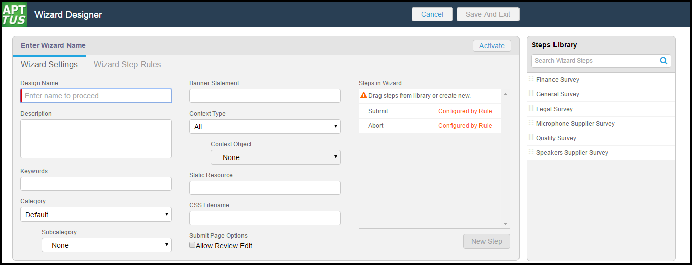
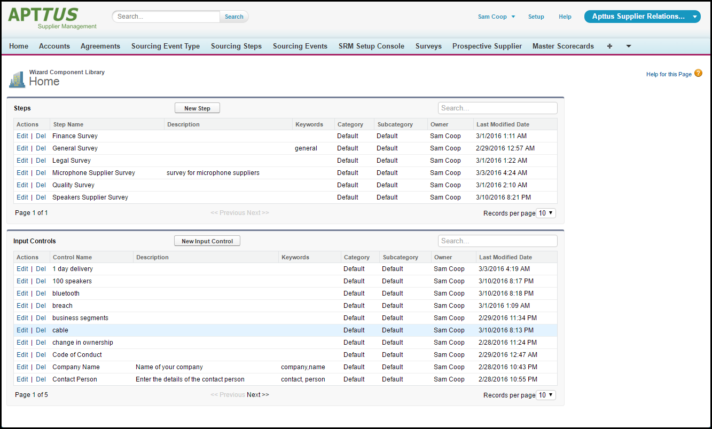
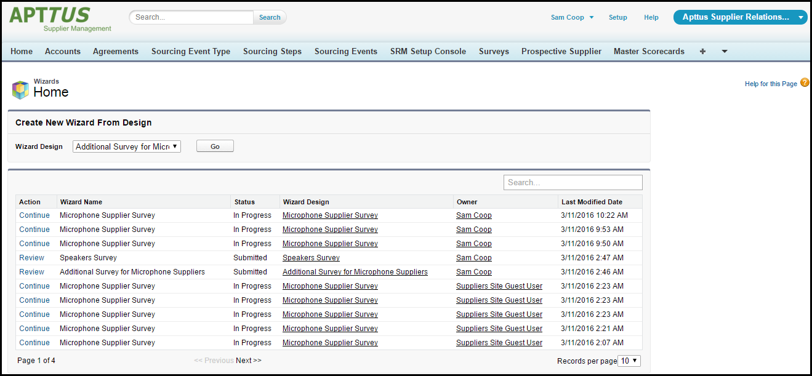

Configurable Wizard
Configurable Wizard enables you to design and deploy custom user-friendly Wizards based on Accounts, Opportunities, Quotes/Proposals, Agreements and other custom Salesforce Objects. These Wizards are intended to be used by your sales representatives, purchasing agents, HR managers and other users to quickly create their own records by entering responses to criteria-based inputs that follow a logical series of steps. Wizards can also be used to collect data from customers to be posted to internal systems or for other business use.
As an administrator, the wizards you create are stored as Wizard Designs. Wizard Designs are comprised of a series of Inputs and Steps, governed by rules that determine the flow and resultant values of the Wizard.
The three tabs pertaining to Configurable Wizard are:
-
Wizard Designs
– Use this tab to create new Wizard designs or
edit existing Wizard designs. You assemble Wizards using the Wizard Designer tool,
adding Inputs and Steps from the Wizard Component Library or creating
instances for use with specific designs. You can design rules for your Inputs based
on criteria or values from other Inputs, configure the flow for your Steps by
creating and organizing Wizard Steps rules, and preview Steps and Inputs as needed
while finalizing the Wizard Design. When you are finished with a design, you can
activate it for use from the Wizards tab.

-
Wizard Component
Library – Use this tab to create
reusable Inputs and Steps for your Wizard Designs. Separate,
searchable libraries for both Inputs and Steps can be created and maintained.
Metadata on Inputs and Steps in the library allow you to categorize and keep track
of when Inputs and Steps are created or modified.

-
Wizards
– Use this tab to run Wizards created from the Wizard
Designer. Your end-users will be able to easily search and select from Wizard
designs to create well-formed records. Wizards also contain a feature which allows
users to preview their responses prior to submission, returning to previous Inputs
and Steps to make changes or corrections. Users can also use the tab to resume
completion of in-progress Wizards or review completed or aborted Wizards.
